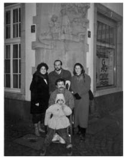
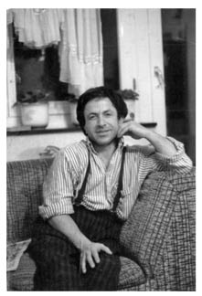

“Ağabeyimi Binadan Aşağı Atan O İnsanla Karşılaşmak İsterim.”
Nigar Özdil Ata36
Ağabeyim Ahmet Özdil 12 Eylül 1980’den önce nisan ayında tutuklandı ve Manisa Emniyet Müdürlüğü’ne götürüldü. Bu olay olduğunda ağabeyim, Dokuz Eylül Üniversitesi İktisat Bölümü’nde öğrenciydi. Tutuklanmasının sebebiyse, içerideki arkadaşlarının konuşması ve isminin verilmesi. Dev-Yol davası ile ilgili Manisa’dan sorumlu kişi olarak suçlanıyor. Tutuklu olduğu süre zarfında işkenceye maruz kalıyor ve Emniyet Müdürlüğü binasından aşağı atılıyor. Ölmüyor, bunun üzerine İzmir Devlet Hastanesi’ne sevk ediyorlar. Bize bir hemşire telgraf çekiyor ağabeyimin ağzından: “Ben İzmir Devlet Hastanesi’nde yatıyorum, gelin bana sahip olun” diye. Annem ve babam telgrafın üzerine İzmir’e hareket ettiler. Ankara’da halamın kızıyla buluştular ve İzmir’e geçtiler. Biz ağabeyime sahip çıkınca onu tutukladılar. Tutuklanınca Buca Cezaevi’ne gönderildi. Bu olayın sonucunda omuriliğinin zedelendiği ve felç olduğu, iki ayağının tutmadığı ortaya çıktı.
Daha öncesinde tutukluluk yok, sorgu sırasında binadan atılmış. Bizimkiler de ne yapacağını şaşırmış. Bu durumda Buca Cezaevi’nde nasıl bıraksınlar. Hasta durumda, belden aşağısı tutmuyor, omurilik zedelenmesi olmuş, omurgada çatlak var. Annemlerin tek hedefi Ankara’daki Rehabilitasyon Merkezi’ne getirmek. Oturma şansımız da bir tek Ankara’da var. Rehabilitasyon Merkezi’ne sevkini sağlayarak getiriyorlar ama yapılan ilk muayenede hastaneye yatırılmıyor. Sivil bir hasta olarak gitsen 6 ay sonraya gün veriliyor ama ağabeyim tutuklu olduğu için bizdeki iş biraz arapsaçına dönüyor. Hem tutuklu hem hasta hem de hastaneye alınmıyor. Bu sefer diyorlar ki Numune Hastanesi’nin Tutuklular Koğuşu’nda yatsın. Ağabeyimi Tutuklular Koğuşu’na yatırıyorlar ve bizim hastane sürecimiz böylece başlamış oluyor. Biz üçlü olarak, annem, babam ve ben -yasal olarak Ulucanlar Cezaevi’ne nakledildiği için- önce cezaevinden izin alıyoruz, sonra hastaneye ağabeyimin yanına ziyarete geliyoruz. Her gün gelmek zorundayız.
Ulucanlar Cezaevi ile hastane arasında bayağı bir mesafe var. Arabayla gidiyoruz, bazı yürüme yerleri de var. Üçlü olarak gitmek zorundayız annem, babam ve ben. Bir de ağabeyimin belden aşağısı tutmadığı için kalkamıyor ve her gün pijama kirletiyor. Yani her gün gitmek ve çamaşırını almak zorundayız. Sonda gibi bir şey var.
Biz işte üçlü bir şekilde tam bir yıl hastaneye taşındık, bu arada Rehabilitasyon Merkezi’ne sevki sağlandı, tedavi süreci başladı. Tedavi sürecinde de yine hastaneye Ulucanlar Cezaevi’nden izin alıp gittik üçlü olarak. Diğer yandan 3 kişinin her gün evden çıkmasının ekonomik boyutu da var. Bizim şansımıza babam, emekli olmuştu. Bir yıl önce ikramiyesi cebimizdeydi, paramız vardı, ekonomik olarak sıkışmıyorduk ama 1 yıl içerisinde o ikramiyeyi sıfırladık. 1 yıl sonra 1981’de, tahliye kararı geldi. Tahliye kararı gelince zaten hastaneden de çıkış sağlandı ve biz Artvin’e geri döndük 1981 Nisan’ında.
Bu arada ne ceza aldığını da bilmiyoruz. Mahkemenin sonuç ilamı bize gelmedi. Daha doğrusu hukuki olarak hiçbir belge gelmedi bize. Sadece tahliye oldu ve biz evimize götürdük. O süreçten sonra da mahkemenin sonucuyla ilgili biz hiçbir karar almadık. Ağabeyim yürüyemez halde olduğu için mahkemeye de gitmedik. Avukat tutmadık, kendi de gitmedi. Mahkeme kendi adına, gıyabında nasıl sürdü, o konuda bir bilgim yok. Benim tek bildiğim tutuklama olduğu ve tahliyesinin de Ankara Numune Hastanesi Rehabilitasyon Merkezi’nden yapıldığı. Kapısında asker bekliyordu hastanede. Bir gün yatarken mübaşir gelmiş, yazıyı direkt ağabeyime getirmiş, “Gözün aydın, tahliye oldun” demiş, imzalatmış. Biz de gittik hastamızı aldık. Korkunç bir sevinçti zaten onun tahliye olması, bize Milli Piyango çıkmış gibi oldu. Tahliye olduktan sonra beraat mı, ceza mı, ne kesildiyse artık bize gelen bir bilgi yok.
1980’de ben liseyi bitirmiştim. Üniversiteye başlamak istiyordum ama bu isteğim başlamadan son buldu. Çünkü biz tamamen ağabeyime odaklandık ailecek. Bu hem ekonomik olarak mümkün değildi hem de ağabeyimden ayrılıp da başka bir yere gitmeyi hiç düşünmedim. Beden eğitimi öğretmeni olmayı istemiştim oysa ki.Ağabeyim de okulu bırakmak zorunda kaldığına üzülmüştür ama bu konuda çok konuşmadık. Zaten konuşsak da çözümsüz bir durumdu. Mümkün değildi; okul İzmir’de, biz Artvin’de. Ekonomimiz el vermiyor. Aslında her şey bıçak kesiği gibi oldu bir anda. Herkes bir şekilde bir dönüş yaşadı, dönüş de işte Artvin oldu. Artık ağabeyimin sakatlığının merkez olduğu bir hayat sürdük birlikte. Pek tabii ki mağdur olduk. Çünkü evimiz engelli bir insanın tüm ihtiyaçlarına cevap verecek durumda değildi. Daracık, merdivenli, inmesi çıkması zor. Evin içerisinde balkona çıkabiliyordu ancak. Evin dışına çok ender çıkabildi. Ancak hastalanınca veya film çekileceği zaman tanıdıklarla arabaya bindirip hastaneye götürüyorduk. Bir de halamın kızı arada Kafkasör’e götürürdü bizi. Babam yaşlı, annem yaşlı, benim onu tek başıma kaldırmam ve evin merdivenlerinden indirmem hiç mümkün değil. Evde zaten hiç kimse kalmamış. Herkes 1980 Darbesi’nin tokadını yemiş, halamın kızları, amcamın çocukları hepsi hapiste. Evde yaşlılar var, ağabeyim bir divanın üstünde 9 yıl bu mağduriyeti yaşadı. Oturduğu yerde ağrısı, sızısı olmadan iyiydi, öğrencileri vardı, öğretmenlik yaptı o dönemde. Eve öğrenciler gelir giderdi. Kendisi hiçbir zaman, devrimciliğin vermiş olduğu o ruhla, yıkılmadı. Çok mutlu yaşadı bizimle. Zaten bizim ikili ilişkilerimiz, ağabey-kardeş ilişkilerimiz çok iyiydi, çok mutluyduk biz bir arada, ben de ağabeyim üniversiteye gittiğinde ondan ayrıldığım için üzüldüğümden, o benim yanıma geldi diye ben bir de seviniyordum. Ama annem tabii çok üzülüyordu onun o haline, o hiç dayanamıyordu. Sonrasında da Artvin’de 9 yıl beraber bir odanın içerisinde, bir evin içerisinde geçti. Ben ağabeyimi çok sevdiğim için benim yanımda ya ben, başka şeyleri hiç düşünmüyorum. Tavla, satranç, kâğıt oynuyoruz, ders çalışıyoruz. Bir tek değişiklik ne oldu? 1980’den 1985’e kadar televizyon yoktu. 1985’te televizyon aldık mesela. Evdeki tek değişiklik, büyük değişiklik bir de o olmuştu. Çok heveslenmişti, hele de renkli televizyon yeni gelmiş. Beni koştur koştur gönderdi git bir tane televizyon al diye. Gittim ki Artvin’de bir tane televizyon var, ikincisi yok yılbaşına. Onu da biz aldık taksitle. Mesela en büyük değişiklik o olmuştur ağabeyim için. Eve televizyon geldi, onun için büyük dünyaydı o. Mutlu oldu.
Ağabeyim hastaydı ama tek şansımız ağrısının olmamasıydı. Oturduğu yerde hiçbir yeri ağrımıyordu. O da bizi avutan bir olaydı. Bir keresinde bir mesane taşı olayı yaşadık, hastalığının 5.-6. yılıydı galiba, sancılandı. Doktora götüreceğim, ben tek başıma onu nasıl kucaklayayım, babam zaten 70 yaşında şeker hastası, götürecek kimse yok. İşte hemen birilerini aradık, kucakladık, götürdük ve mesanede taş çıktı. Ameliyat olması gerekiyordu. Allahtan ilaçlar verildi, ağrısı dindi ama mesaneden taşın alınması gerekiyor, ağabeyim de Artvin’de ameliyat olmayı hiç düşünmedi, direkt Ankara’ya geldik, Hacettepe’ye. Ama o ağrılı dönemi son derece zor geçti. Bizim avuntumuz sakatlığı boyunca aslında ağrısız yaşamış olmasıydı.
Dokuz yıldaki en büyük sıkıntımız idrar torbasıydı, ondan çok çekiyorduk. İdrar torbasına tutturdukları parça penisinde yara yapıyordu, ağır yaralar oluyordu, o süreç bize çok ağır geliyordu. Altına kaçırıyordu, o zamanın imkânsızlıkları da çok fazla. Şimdiki gibi bez yok, başka bir şey yok, sağlık sorunlarını öyle kötü geçiriyorduk. Aşılması da çok zordu ve aşamıyorduk da çoğu kez. Onun işkencesini kendi çekiyordu, sabahlara kadar oturarak duruyordu, yatamıyordu çünkü. Yatarsa koruyucu yok, bez yok, bir şey yok. O konuda çok sıkıntılar çekiyorduk ama ağrısız sıkıntılardı. Ağrısı, sızısı olmuyordu, bir sonda gibi değil ya. Hissetmediği için de anlayamıyor. Hem belden aşağısı tutmuyor hem idrar kaçırıyor ve teknik hiçbir çözümü yok. Bugünün şartları olsa, bez olacak ve çok şeyden kurtaracağız mesela, daha rahat edecek ama ne yazık ki o şartlarda bir hayat sürdü. Zaten bence belden aşağısı tutmayanlar için en büyük devrim bez olayı. Yaşamayan bilemez. Bez nedir ki diyorsun ama bu tür hastalar için en büyük olay bence bez.
Dokuz yılın sonunda bir gün bir mektup geldi bize Almanya’dan. Ağabeyimin arkadaşının kardeşi, kendisini Almanya’ya götürmek istiyordu tedavi için. Telefonunu da yazmıştı. Biz hemen telefonu çevirdik, Settar’la görüştük, Settar bize “Pasaportu alın, ben size davetiye göndereceğim, Almanya’ya aldıracağım” dedi. Pasaport evraklarını, her şeyini ben yaptırdım, onun adına. Vizesini Almanya’ya alamadık, Fransa’ya aldık. 1989’da Paris’e uçtu. Paris’ten gelip arkadaşları Almanya’ya götürdüler.Fransa’ya gitti, Almanya’da 3 yıl yaşadı. Orada en azından beze kavuşmuştu. Bezle çok özgürleşmişti. Ne yazık ki bu arada mesane kanseri olduğunu öğrendik. O kadar hızlı ilerleyen bir kanser ki, doktorlar teşhis bile koyamadılar, isim bile koyamadılar yani hastalığına. 15 gün ömür biçtiler, gün bile vermiştiler ama dediler ki, biz seni kobay yapacağız. Bir ilaç denemesi yapacağız, kabul edersen sana bunu deneyelim. O da hemen kabul etti, insanlığa yarayacaksa eğer bu iş dedi, bir sonuç alınacaksa ben bir hizmette bulunayım. Böbreklerden girdiler sondalarla, mesaneyi iptal ettiler, böbreklerden idrarı direkt dışarıya alıp tedaviye başladılar ve tedavi sonrası çok iyileşti, yani gripten çıkmış gibi, o kadar iyi oldu ama sonra yine hastalığın pençesinden kurtulamadı ve 5 Mayıs 1993 günü, babamla aynı gün, babam Artvin’de şeker komasından, o Almanya’da mesane kanserinden öldü. Onu getiremedik, babamın cenazesiyle aynı güne denk geldiği için herkes Artvin’e geldi, ağabeyimi havaalanından teslim alacak kimse olmadığı için bir hafta sonra teslim alabildik, naklini sağladılar. Bir hafta sonra da onu babamın yanına defnettik.Ağabeyim, Türk pasaportuyla gitti ama Almanya’dan sığınma hakkı aldı. İltica etti yani. Türk vatandaşlığından çıktı mı onu bilmiyorum ama Türkiye’ye dönmek için de bütün çabasını sarf ediyordu. Buraya ne zaman döneceğinin hesabını yapıyordu. Sığınma hakkını da şundan ötürü aldı; oranın sosyal yardımlarından faydalanabilmek ve tedavi masraflarından kurtulmak için. 1989’da gitti. 3 yıl kaldı. Bu süre zarfında hep hastanede değildi. Orada dönem dönem yatırıyorlar hastaneye. Onun belden aşağısı tutmadığı için bir kas güçlendirmek amacıyla bir de genel kontrol için. Mesela 8 ayda bir gidiyor, 15 günlük tedavi oluyor çıkıyor.
1992’nin, evlendiğim senenin yılbaşını biz ağabeyimle Almanya’da geçirdik. Bizi davet etti. Hamburg’daydı. 10 gün beraber kaldık. Bir de son dönemde hastalanınca gittik. Uzak olduğu için sürekli de gidip gelemiyoruz.
Darbeden Öncesi ve Sonrası
Darbeden önceki hayatımızda tabii ağabeyimin böyle hasta olup geri döneceği aklımızın ucundan geçmeyen bir olaydı. O üniversite okuyordu, belki ben de okuyacaktım, hayalimi belki üniversite hayatı süslüyordu ama olayların böyle gelişmiş olması nedeniyle bizim eve bomba düşmüş gibi oldu, bizim tersimiz döndü yani. Annem, babam evlatlarının öyle oluşunu hazmedemedi, dayanamadılar. Babam koyu Adalet Partili’ydi ve oğluyla hep ters düşüyordu. Daha doğrusu ailede bir tek babam Adalet Partili olduğu için babamın sesi çok çıkıyordu. Herkese muhalefet ediyordu, tartışma çok fazlaydı. Öyle bir hayatımız vardı.
Darbeyle beraber 3 hastaya bakmaya da başladım. 17 yaşındaydım. Annem 60 yaşında, babam 62 yaşında, ağabeyim de felçli bir durumdaydı. Ben 3 hastaya bakar oldum. 1991 yılında evlendim. Babam ve ağabeyimin ölmesiyle annem bizimle yaşamaya devam etti ve çocuklarımı büyüttü. Bir anne olarak yaşadıklarına hiç dayanamadı. 7 yıl bizimle yaşadı ama ağır depresyon geçiriyordu. Depresyon olduğunda hastanede yatırmıyorlar. Evde biz ona bakıyorduk. Ağır koşullarda geçiyordu ve her iyileştiğinde bana ne oldu diye soruyordu. O süreci yaşıyor, farkında olmuyor, hastalık mide hastalığı olur, beli ağrır insanın, bacağı ağrır ama bu kendinden geçiyor, uyur vaziyette. Doktorlar uyutuyor zaten o depresyonu geçirmesi için, kadıncağız kendine ne olduğunu anlayamıyor. Depresyonu anlatıyorsun, yaşlı insanlar çok anlayamıyorlar, yorum da yapamıyorlar. Böyle ağır koşullarda bir hayat geçirdik annemle beraber ve annem gittiği yerlerde, oğlunu yitirmiş diğer kadınlarla daha mutlu oluyordu. Çünkü Nasrettin Hoca’nın dediği gibi “Damdan düşen gelsin yanıma, o anlar” diye. O da çocuğunu kaybetmiş olanlarla mutlu oluyordu. Öbür tip, kaynana tipi kadınlarla hiç mutlu olamıyordu. Onlar gelinlerinden konuştukça kızıyordu onlara “Sizin gelininiz olmuş da bir de konuşuyorsunuz, konuşacak ne var!” diye. Bu süreçte ben hep bir hastabakıcı ve doktor gibi yaşadım. Hiç psikolojik destek almadım; fakat annem ağır bir depresyon geçirdi, dolayısıyla ilaç kullandı, tedavi oldu tabii. Sonuçta annem şöyle tıkandı, kişilik olarak; eşim öldü, oğlum öldü, ben kaldım, Nigar da ölürse eğer ben nereye giderim? Annemin bütün korkusu o oldu.
Maddiyat Ayrı Bir Boyut
İlk dönemler ben maddi yönünü hiç düşünmüyordum tabii. Yaşım 17 olduğu ve ağabeyim yanımda olduğu için benim için para hiç önemli değildi ama yıllar geçtikten sonra yaşadıklarımızı gözden geçirince ve maddi olarak hesabını yapınca, 2 ev parası harcamışız ağabeyim için. Tabii ki hem psikolojik hem maddi olarak bir yıkım. Peki ya harcayacak paramız hiç olmasaydı... Mesela o gün, ağabeyim hastanedeyken paramız olmayabilirdi ve biz o zaman Artvin’e dönmek zorunda kalabilirdik. Onu bekleyemeyecektik, o 1 yıllık süreci o Ankara’da, biz Artvin’de geçirecektik, başka çaresi yoktu ki. Zaten eğer tahliyesi olmasaydı, bizim paramız bitmişti ve biz dönüyorduk nisanda geriye. Bizde artık para kalmamıştı, ağabeyim tutukluydu, yapacak da hiçbir şeyimiz yoktu. Artık ne olacaktı onu bilemiyorum ama şansımıza ağabeyim de tahliye oldu, tahliye olunca onu da aldık döndük. Öyle gelişti olaylar. Tahliyesi olmayabilirdi.
Tarifi İmkânsız Bir Acı
Ağabeyim, nisanda getirilmiş Ankara’ya. 1 Mayıs tarihinde amcamın ve halamın kızlarıyla ağabeyimi görmeye geldik. Hastanedeyiz. Ağabeyimi yatırmışlar, doktorlar demişler ki, ayağına masaj yaptırın, hareket ettirin, kireçlenme olur gibilerinden. Babam ve ben odadayız. Babam, şimdi ona öğretilmiş ya hemen ayaklarına hareket yaptırmaya çalışıyor. Bir şevk ve heyecanla, iyileşecek zannediyor çünkü. Bütün umudumuz zaten, Rehabilitasyon Merkezi’ne yatırılacak ve iyileşecek. Bilmiyoruz ki olayı, omurilik zedelenmesi nedir bilmiyoruz, bugünkü gibi internet yok, bakıp öğrenemiyoruz. Rehabilitasyonun adını bile diyemiyoruz, hastane hastane ama rehabilitasyon merkezi nedir onu bile bilmiyoruz. Babam böyle ağabeyimin ayağını kaldırınca ben çok kötü oldum, tansiyonum düştü. Ayağı cansız bir şekilde düştü. Hiç kıyamadım ona. O anı hiç unutmuyorum. (ağlamayla kesiliyor)
(Ağlayarak anlatıyor) Bir de şunu hiç unutamıyorum. Kobay olduğu dönemde üç aylık oğlum ve ben, Almanya’ya ağabeyimin yanına gittik. Tedavi sonrasında, bize dendi ki, tedavi bitecek ve bir başka hastaneye nakledeceğiz. Kanser hastanesinden kendi gittiği Termin Hastanesi’ne. O yüzden de dediler ki burada kalsanız bile buradan sizi oraya ulaştırmak çok zor olur. Dolayısıyla biz yalnızca 10 gün kalabildik Almanya’da. Hastanedeki son görüşümüz oldu ama ağabeyim iki ay da evinde yaşadı. En çok acıdığım odur. Bilseydim ki eve çıkacak ben iki ay izin alır, Almanya’da ağabeyimle kalırdım. Ben geldikten sonra biz Artvin’e döndük. Hastane olmadı, ağabeyim evde kaldı. O kötü dönemini evde bir anlamda yalnız başına geçirdi. Telefonla görüştük, artık sık sık konuşuyorduk ama keşke ben tarihi geri çekebilsem ve o son iki ayı onunla orada yaşasam. En çok üzüldüğüm odur yani. O iki ay oğlum, ben ve ağabeyim beraber olabilseydik ama olmadı. O, iki ayı evde, bir bakıcısı ve yardımcısı çocukla geçirdi.
Anne Senin Niye Kimsen Yok?
Bu arada evlendim, 2 çocuğum oldu. Çocuklarıma çok küçükken anlatmadım ama onların ilk dikkatlerini çeken şu oldu: “Anne senin niye kimsen yok? Herkes ölmüş.” Ben artık fotoğraflara hiç bakamam ve hiç sevmem. Çünkü insanlar ölüyor ve fotoğraflar bana çok ağır geliyor. Mezarlığa gitmem, fotoğraflara bakamam,

Ahmet Özdil ailesiyle birlikte
belki de ağabeyimi çok sevip de onu kaybetmenin etkisidir bana. Mesela annemde veya babamda öyle olmuyor. Annemin babamın yaşı var, hani ölüm kabul ediliyor da, ağabeyim için hiç öyle olmuyor. Ağabeyimin acısı çok başka. Hem böyle haksız yere çekerek, haksızlıklara maruz kalarak gitmesi... Nasıl bir kader? Kader de demek istemiyorum da, bir şanssızlık diyeyim. Nasıl bir şanssızlık? Ben insanları bir de şanslı şanssız diye ayırırım, ağabeyimde

Ahmet Özdil
de büyük şanssızlıklar var diye görüyorum, Almanya’da bunun tedavisi var, 70 yaşında insanlar mesane kanserinden hastaneye yatıyor, iyileşiyorlar; ağabeyime gelince çaresi olmuyor. Çok geç fark edildiğine bağlamış en son doktorlar. Oturduğu ve idrarını hissetmediği için, fark edilmedi, çok ilerledi, geç kalındı diye de söylemişler ama işte o da onun şanssızlığı diyeceğim artık. Başka bir şey demiyorum.
Kendi çocuklarım biliyorlar. Saygı duyuyorlar. Mesela ben bazen haberleri izlerken ağlarım. Hemen derler ki dayım aklına geldi herhalde anne. Ben de hiçbir şey diyemem sadece ağlarım. Ağlamak da insanı rahatlatıyor ama gülmek varken ağlamak niye? İşte bize ağlamak düştü ne yazık ki. Keşke gülebilseydik bir toplum olarak kardeşçe ama kısmet değilmiş.
Suçumuz Devrimci Olmak
Devrimci olmanın cezası bu olmamalıydı bence. İnsanların işkence görüp bu hale getirilmesi bence insanlık suçudur. Hiçbir insan böyle bir şeyle karşılaşmamalı ve hak etmemeli. Nice insanlar bu durumlara düştüler, bir tek ağabeyim değil. Ama keşke olmasaydı, keşke başka dünyalar kurulabilseydi bu gençlik üstüne. Çünkü 1980’de, 20 ve 25 yaş arası gençlikte kıyım yapıldı ve bu kıyımı da bilinçli bir şekilde yaptılar. Bunu artık biliyoruz, sağır sultan bile duydu. Bu hale getirildik biz ve bu olayların sonucunda da kurulu plan gibi sen sağcısın, sen solcusun diye insanları tespit edip cezaevlerinde hak etmedikleri durumlarla karşı karşıya bıraktılar. Devrimciliğin üstüne ölü toprağı serpmek istediler, insanları susturmak istediler, insanları da nasıl susturacaklar, korkutarak. Biz 12 Eylül sabahını Ankara’da 12 Eylül’den önce yaşamışız zaten. Tutukluluğu, işkenceyi görmüşüz. Bize erken geldi. Diğer insanların yaşadığı o tutukluluk serüvenlerini ben yaşamadım. Çünkü onlar tutuklandığında biz zaten geçmiştik o yoldan.
Hiç düşünemiyorsun bunların başına gelebileceğini. Toplum olarak, aile olarak böyle bir şey yaşamanın faturası nasıl bize çıktı? Tartışılması gereken nokta bence o! Artık hangi zamandayız... Şimdi benim iki oğlum var, ben istemiyorum ki düşüncesinden ötürü benim oğullarımın veya arkadaşlarımın çocuklarının başına da böyle şeyler gelsin, insanlar gene böyle şeyler yaşasın. İnsanlar kendi çıkarlarını ön planda tuttuğu sürece, biz bu çıkarlarımızdan vazgeçmediğimiz sürece bu süreçler hep yaşanacak. Korkum bu. Şu andaki en büyük korkum bir kuşak daha bunu yaşamasın veya yaşatmasınlar. Bence bunu da kadınlar yapacak. Ben kadınlara inanıyorum.Ben ağabeyimi politik mücadelesi nedeniyle hiçbir zaman yargılamadım. O dönemde nüfusun kaçta kaçı ağabeyim gibi aktifti. Herkes mi suçlu? O bir suç değildi, o bir dünya görüşüydü. Politik mücadele nedeniyle toplumdan da aileme karşı negatif bir tavır olmadı.
Geleceğe Dair Umutlarım
Ben çocuklarıma güveniyorum, çok iyi çocuklar, iyi eğitim aldılar, bir şekilde bu KPSS denilen çılgınca sınavdan da iyi sonuçlarla çıkacaklarına eminim ama benim çocuklarım kurtulmuş neye yarar. Komşumun çocuğu orada aç yatarken benimkinin karnı doysa neye yarar. Devrimcilik de bu işte. İsterim ki bütün çocukların yüzü gülsün, herkes kurtulsun, her şey hesaplı olsun. Bir yola çıkılırken, bir adım atılırken, yarınları görebilmek umuduyla sabahlara uyanılsın. Bugün de şunu yapacağım diyebilsin insanlar. Benim çocuklarımın kurtulacağına ben inanıyorum ama ya öbürleri? Yetmiyor. Ya öbürleri ne olacak? Onların kaderi mi olacak şimdi bu kadersizlik. Herkesin hakkıdır kurtulmak, iyi bir ekonomik güce sahip olmak, herkes ister, kim istemez ama birine yaz, birine kış, şu ana kadar yaşanılanlar bunlar. O kış olanlar benim kaderimdir deyip oturulacak mı?
Ben 1970’lerde ivme kazanan devrimci mücadelenin boşa gittiğini düşünmüyorum. Umudumu da hiç eksik tutmuyorum ve umudum kadınlar üzerine yoğunlaşıyor genelde. Şöyle dersler çıkarılacak: Aklı başında insanlar, okumuş olan insanlar oturup düşününce, devrimcilerin yanlış yapmadıklarına inanacaklar ama öyle büyük bir güç, öyle büyük bir oyun var ki üstümüzde. Bu 1980’de yaşanılan devrimcilerin emeği yetmez, belki de 2020’de de böyle bir olay gene yaşanacak, bizi idare etmeye çalışan birileri gene başka bir oyun oynayacaklar bizim üstümüzde.
12 Eylül Davası
Umarım bu davadan bir sonuç çıkar ama şimdiye kadar görünen o ki önce 28 Şubat’ın öcü alınıyor. 28 Şubat davası bittikten sonra 12 Eylül’e de bir geçiş sağlanır belki. Sonuçta büyük çaplı bir iş o zaten. Bu bir tek Kenan Evren’le olmaz, onun suçlanması yetmez. Çünkü o dönemde en başta mesela işkenceciler yargı önüne gelmeli. Kimdi bu adamlar, bir gecede ortaya çıkmadılar ya! Suçlansın bunlar artık. Bunların da cezaları kesilsin. Bir insanın bir insana böylesine davranmasını gerektiren neden neydi? Hiç olmazsa bunu paylaşsınlar. Ben mesela ağabeyimi binadan aşağı atan o insanla karşılaşmak isterim. Neye göre attın, ne düşündün? İçinden gelerek mi yaptın, senin de hayatın mahvoldu mu acaba? Bu işleri yaptıktan sonra bunlar rahat olabildiler mi normal yaşantılarında? Bunu da paylaşsınlar çıkıp televizyondan, bu da bir devrimdir mesela. Ama bunun bir cezası da olsun bence veya bir sonraki kuşakta “Ben bunu yaparsam bunun bir cezası var” diye çekinsin insanlar. Hitler de birçok insanlık dışı şey yaptı Almanya’da, örneğini görüyoruz. Bu faşist diktatörlerin neler yaptığını görüyoruz. Ama Almanya’da bizden farklı olarak onların nasıl cezalandırıldıklarını da görüyoruz. İşte Hitler’in hangi subayının yıllar sonra tutuklanıp nasıl cezaevine atıldığını görüyoruz. Bu da bir ölçüdür, bir değerdir. Belki de bir frendir topluma. Bir daha bu acıların yaşanmaması için bir önlemdir. Bizim de toplum olarak ihtiyacımız olan bu tür bir adalet refleksidir.
36 1963 doğumlu. TEDAŞ emeklisi. Ağabeyi Ahmet Özdil gözaltına alındığında Nigar, 17 yaşındaydı.